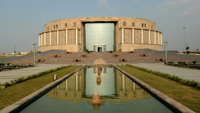
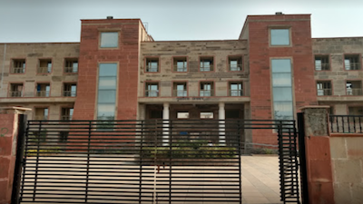
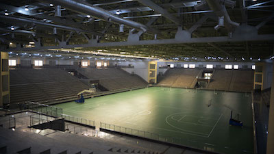
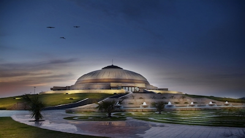

BODHISATTVA DR. B.R.AMBEDKAR LIBRARY

The Bodhisattva Dr. B. R.Ambedkar Library liaises with academic staff and researchers to identify the information needs of library users, procures material and provides services to make required information available, provides a conducive environment to study and research, and facilitates users with advice, assistance and skills training in using documents and information sources.
STUDENTS ACCOMMODATION

The vision behind setting up Hostel was to fulfill the dreams of thousands of parents looking for an academic haven to nurture and give their children bright future. The institution provides a congenial and homely atmosphere with healthy boarding and lodging facilities for both boys and girls who come here from far and wide. Various workshops, seminars, activities like debates, elocution, extempore etc strengthen the academic & co-curricular base of the students leading to their overall development.
SPORTS ACTIVITIES

The university promotes multi dimensional growth with emphasis on an integrated physical and intellectual training. Though in its formative stage, it has appointed a physical training officer and has devised special slots in daily curriculum for physical training, track and field activities, and other sports both indoor and outdoor ones. A huge sports ground with an eight lane track is shaping physical health of its inmates.
Shauryotasva, annual sports meet aims at motivating students participate and add physical extensions to their intellectual quests. Recently concluded the first sports meet Shauryotasva 09 witnessed an excellent display of sportsman’s spirits of students and faculty members.
CULTURAL ACTIVITIES
Culture is the widening of mind and spirits” well displayed by the students of Gautam Buddha University. The beauty of every culture is enhanced by the minds that practice it. Abhivyanjana is a birth of a new tradition. It is GBU’s annual cultural and management event that intends to add wings to intellect, imagery, and creativity of our students. It is very essential for every civilization to preserve their heritage and celebrate it from time to time. No culture can survive in isolation hence it is imperative to make the young generation aware of this heritage. Abhivyanjana aims at dissolving the cultural demarcations and facilitating a new school of thought where every student thinks beyond the limit but still grounded to his values. It also gives a platform to the budding managers and compels them to think out of the box.
MEDITATION CENTRE

The university has Jyoti Rao Phule Meditation Centre, inspired by stupa-architecture. The initiative is to guide and shape physical, mental and spiritual growth of young minds, body and soul.Meditation may involve generating an emotional state for the purpose of analyzing that state—such as anger, hatred, etc.—or cultivating a particular mental response to various phenomena, such as compassion.